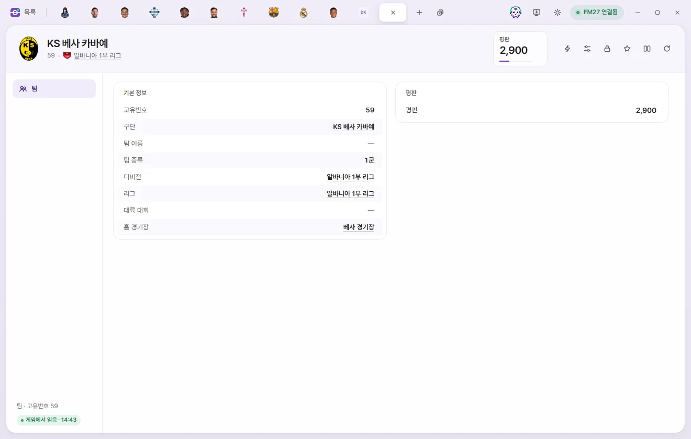
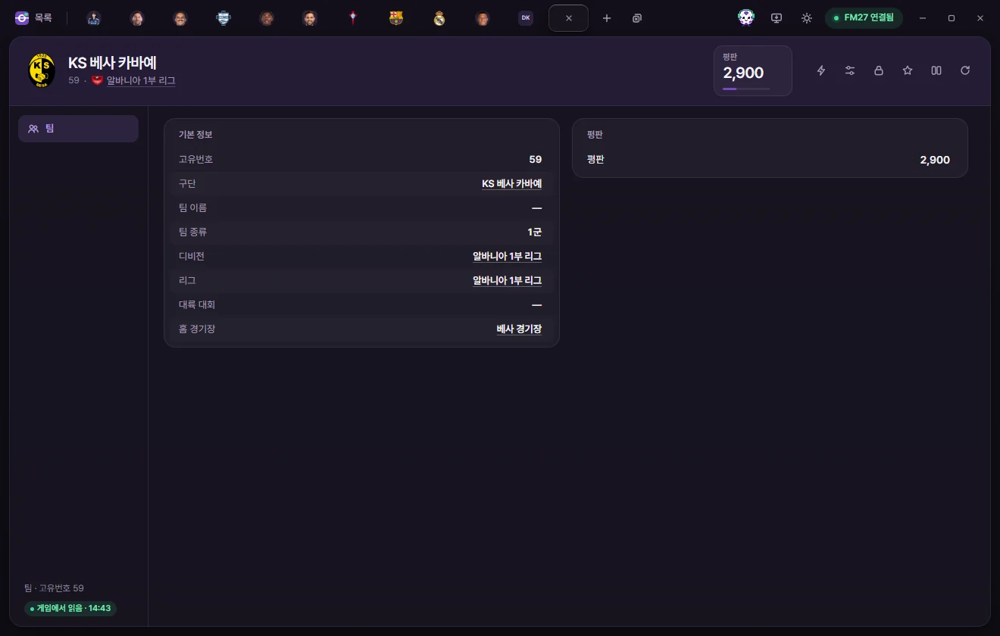

편집 탭
팀
구단 안의 1군, 2군, B팀, U21·U18 같은 팀 하나의 탭입니다. 팀 평판을 고치고, ⚡ 메뉴로 팀 선수 전체의 부상·출장 정지·불만·사기를 다룹니다.



탭 여는 법
- 팀 목록에서 이름을 누릅니다.
- 구단 탭 선수단 페이지의 표 제목(예: 1군)을 누릅니다.
- 구단 탭 정보 페이지의 팀 목록에서 누릅니다.
- 선수의 대회 등록 목록처럼 팀이 나오는 목록에서 누릅니다.
팀 이름은 팀 자체 이름이 있으면 그 이름, 없으면 구단 이름입니다. 여자 구단의 팀은 이름이 여자 팀 색으로 보입니다.
탭 머리
- 이름 아래에 고유번호, 구단, 팀 종류, 리그가 보입니다. 밑줄 이름을 누르면 그 탭이 열립니다.
- 숫자 카드는 평판(0~10000) 하나입니다. 눌러서 바로 숫자를 칩니다.
- 오른쪽 단추는 ⚡ 게임 에디터 기능, 프리셋, 고정, 즐겨찾기, 비교, 게임에서 다시 읽기입니다. 쓰는 법은 선수 탭 머리와 같습니다.
팀 페이지
| 칸 | 하는 일 | 고칠 수 있는 범위 |
|---|---|---|
| 고유번호 | 보기만 | |
| 구단 | 누르면 구단 탭이 열립니다 | 보기만 |
| 팀 이름 | 팀 자체 이름(없으면 비어 있음) | 보기만 |
| 팀 종류 | 1군, 2군, B팀, U23, U21, U20, U19, U18 | 보기만 |
| 디비전, 리그, 대륙 대회 | 누르면 대회 탭이 열립니다 | 보기만 |
| 홈 경기장 | 누르면 경기장 탭이 열립니다 | 보기만 |
| 평판 | 팀 평판 | 0~10000 |
팀 목록에 있는 '감독', '주장' 열은 목록에서만 보입니다. 이 탭에는 없습니다.
⚡ 메뉴
팀 탭의 ⚡ 메뉴에는 두 묶음이 있습니다.
- 선수 전체: 모든 선수 부상 제거, 모든 선수 출장 정지 제거, 모든 선수 불만 제거, 팀 사기 바꾸기
- 팀: 팀 결속력 끌어올리기, 전술 이해도 최대로
항목마다 무엇을 하는지는 게임 에디터 (⚡)에 있습니다.